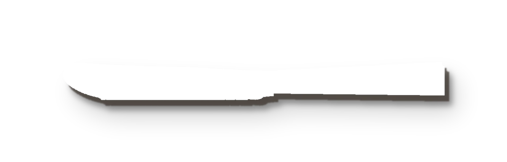
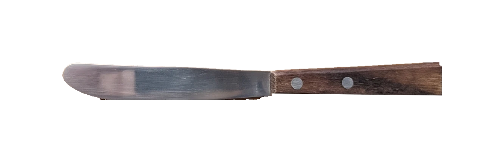

Stullensimulator
Making your sandwich …
Tap a pot: the knife takes some spread. Empty? Tap again.Tap a pot: the knife takes some spread. Empty? Tap again.


Spread it over the bread with your finger.Hold the mouse button and spread it over the bread.
Drag a topping up onto the bread.Drag a topping up onto the bread.
Tap a topping, then turn it by the handle.Click a topping, then turn it by the handle. The mouse wheel turns it too.
If a topping wobbles, it slides off when you let go.If a topping wobbles, it slides off when you let go.
Drag a topping off the bread to get rid of it.Drag a topping off the bread to get rid of it.
Red button: photo. “Keep” saves it on this device.Red button: photo. “Keep” saves it on this device.